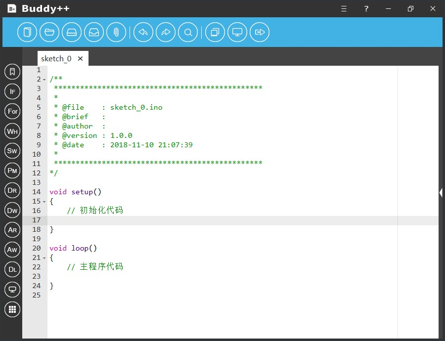
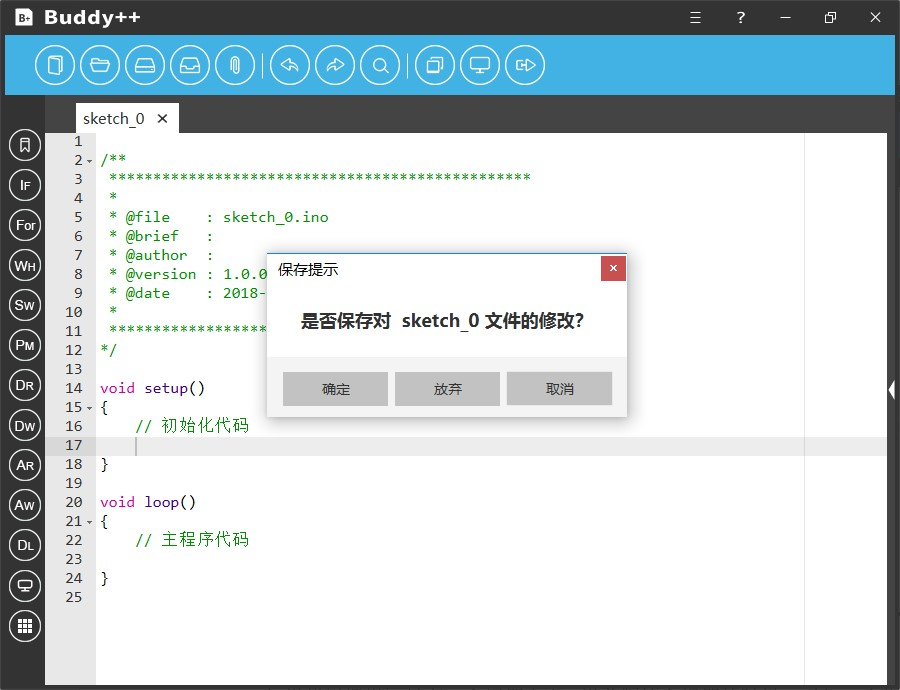
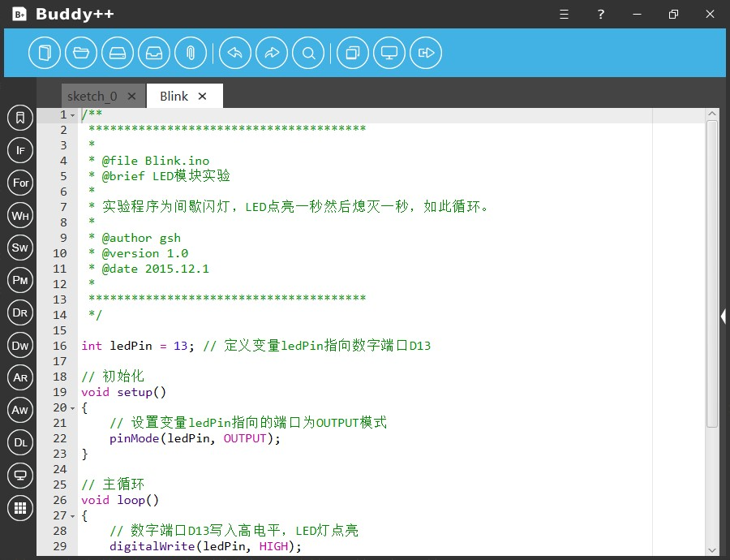
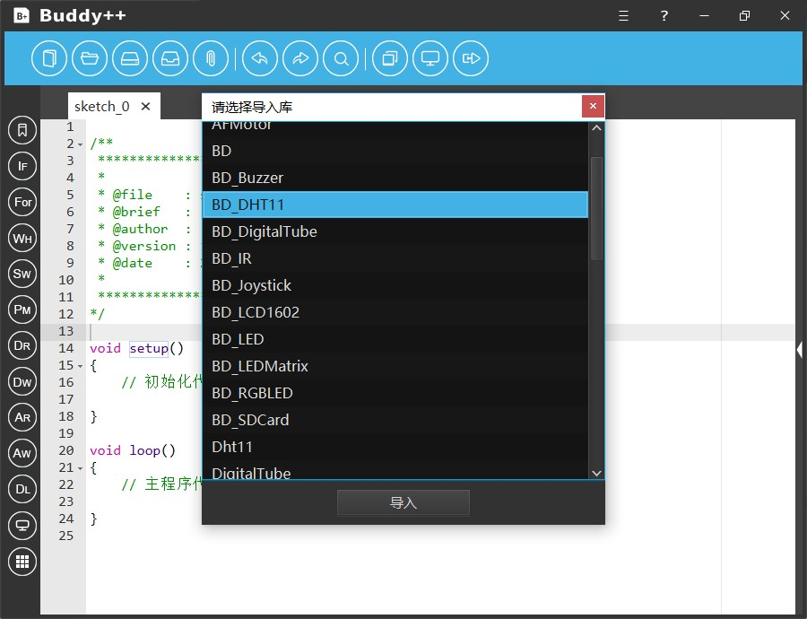
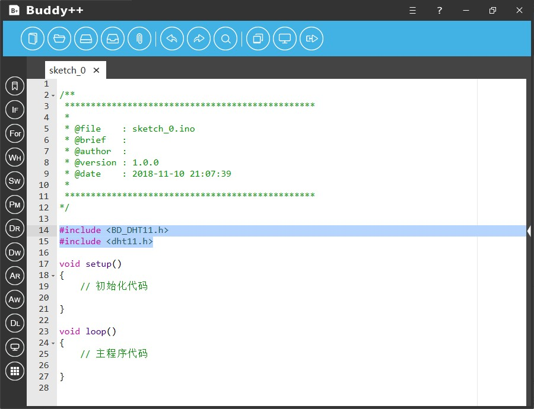
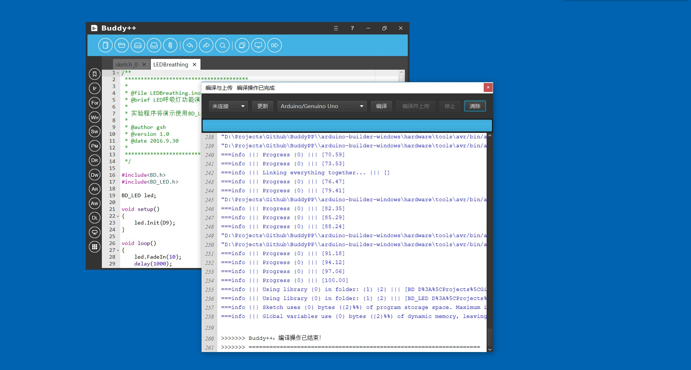

Buddy++拥有非常简洁的界面，我们把常用的功能设计为图形化的一级菜单，从而简化了官方IDE的多级文本菜单。

界面整体分为四大部分，一是上方的基础功能菜单、二是左侧的扩展功能菜单、三是位于中央的代码编辑器、四是位于右侧的可扩展信息栏。
基础功能菜单位于界面上方蓝色部分，其包括文件操作、编辑选项及编译烧录三个板块：
Buddy++提供最基础的源码文件处理，其中包括源码文件的创建、保存和关闭。在进行编码之前我们首先需要创建一个源码文件，在启动Buddy++的时候程序已经默认为开发者创建了一个源码文件。
如果开发者需要同时编辑两个源码文件，点击“新建”按钮，程序将会创建一个标签页面，点击相应的标签即可切换当前的源码文件，如果要关闭当前的源码文件点击标签上的“交叉”按钮即可。

如果代码编辑区只有一个标签页面，当关闭这个标签的时候Buddy++主程序也将会被关闭，如果当前源码文件未保存，程序将会弹出提示框咨询是否保存当前文件，如果不保存可点击“放弃”按钮，如果选择保存则需要指定保存的路径。
如果开发者要保存当前编辑的源码文件，点击主界面顶端菜单的“保存”按钮即可，如果文件是第一次保存则需要指定文件的保存路径，否则文件将保存在默认的路径。
新版本的Buddy++支持文件拖入操作，例如您希望Buddy++打开计算机桌面的某个源码文件，您仅需要点击选中该文件并把它拖入至代码编辑区，Buddy++将会自动新建一个代码标签页并把该文件的内容导入。
Buddy++为入门开发者提供了丰富的基础案例，其中包括针对面包板电路的基础案例，也包含以模块化为基础的开发案例。
点击界面上方功能菜单中的“示例”按钮，开发者可以在弹出的窗口中选择所需参考的示例工程，选择无误后点击“打开文件”按钮即可。导入例程后开发者可以按需要修改源码内容，从而提高开发效率。

Buddy++顶端主菜单支持代码编辑区最为基础和最为常用的编辑功能，其中包括重复（Redo）、恢复（Undo）和搜索（Serach）。

搜索功能提供基础的筛选搜索选项，开发者可以输入关键词并选择“大小写区分”、“顺序/反向”等子选项以满足搜索操作。

通过使用快捷键“CTRL + H”可调用更高级的搜索与替换功能。
当项目开发涉及较高级的功能或需要使用第三方模块，这时一般需要引入第三方的库文件，Buddy++为开发者提供方便快捷的开发库引入功能，通过简单的选择开发者就可以完成操作。

点击界面上方功能菜单中的“添加库”按钮，开发者可以在弹出的窗口中选择所需导入的库文件。

与Arduino官方提供的IDE一样，Buddy++为开发者提供基础的串口通讯与调试工具。示框。

在进行串口通讯之前，开发者还需要正确地选择通讯波特率，开发者还可以根据实际需求选择显示设置。

点击“开始”按钮，调试工具开始接收串口信息并把信息显示于面板，点击“暂停”则停止接收信息。
当开发者完成了程序设计，接下来就是要进行程序的编译与上传，点击“编译与上传”按钮，主程序将会弹出独立的“编译与上传”窗口。

在操作之前开发者需要先选取目标主控板的具体型号，如果需要进行上传操作还需要选择正确的串口号。
点击“编译”后编译操作将启动，窗口将会显示具体操作进度，控制台会实时显示当前的编译信息。如遇编译失败的情况，开发者可以细阅控制台输出的提示信息找出导致编译失败的具体原因。

如果开发者希望提高开发效率可以直接点击“编译与上传”按钮，Buddy++将会先完成编译操作然后进行上传操作。
同样地当上传工作开始时，窗口将会显示具体操作进度，控制台会实时显示当前的编译与上传信息。如遇到上传失败的情况，开发者可以细阅控制台输出的提示信息找出导致上传失败的具体原因。